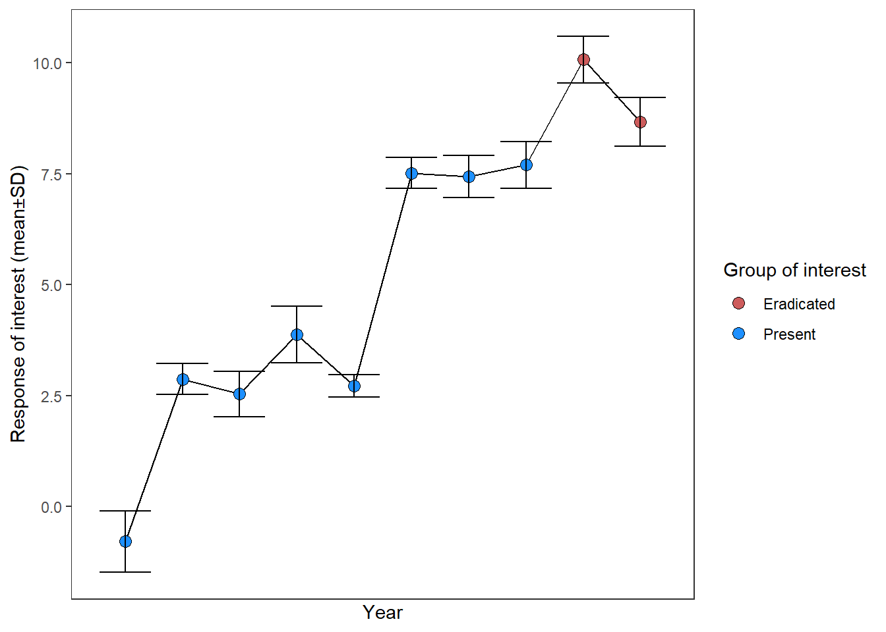

| mean_type | error_type | experimental_mean | experimental_error | experimental_N | control_mean | control_error | control_N |
|---|---|---|---|---|---|---|---|
| mean | SD | 1.5 | 0.10 | 15 | 0.75 | 0.09 | 15 |
| mean | SE | 3.0 | 0.05 | 20 | 1.50 | 0.04 | 20 |
| median | 95% CI | 2.0 | 0.08 | 30 | 2.00 | 0.07 | 30 |
Discrete groups with continuous outcomes
SMD / lnRoM
The experimental workhorse
These are among the most commonly used effect size types in meta-analyses. These effect sizes compare a continuous response variable between two discrete categorical predictors (e.g., Control vs Experiment). By continuous, we mean a measurement summarized by its central tendency (mean, median) and dispersion (variance, standard deviation, standard error) across replicates. These replicates are the sample size.
The primary effect sizes that can be calculated with this data are standardized mean difference (SMD) and log-transformed ratio of means (lnRoM). Please see here for a more thorough description of these effect sizes, their assumptions, and their interpretation. In general, the extraction for these effect sizes is similar. However, as you will see, some data types constrain you to only using SMD because of values ≤ 0, which only SMD can handle.
Database design
We recommend structuring your database to be wide, with columns and to look approximately like this (omitting article id, effect size id, and the other non-independence structures and covariates that you might be interested in):
Extraction
The simple cases
SMD dream material
We’ll start with the simplest figure types, mostly in order to contrast with more complex types. If you’re using metaDigitise() to extract data (Pick et al. 2018), the function will guide you through calibrating the axes and selecting the top of the error bars and the top of the bars themselves (the mean). If the figure reports standard error (\(se\)), metaDigitise() will convert it automatically to standard deviation (\(sd\)). Always be aware of what the error type is.

Box plots are also straightforward and involve extracting the minimum, lower quartile, median, upper quartile, and maximum values. metaDigitise() will walk you through that extraction and will automatically convert the interquartile range and median to mean±SD.

It’s also common to see figures like this with more complex non-independence structures. These can be dealt with by digitizing only the final time point or by controlling for non-independence with random effects (see here for a brief discussion of these issues).

Let’s move on to more complex situations.
Important3-dimensional plots
There was a brief period in the 1990s when these became popular. 3D plots were often of histograms. but many other types existed, including bar charts, etc.
We won’t discuss these much here, we just want to acknowledge your pain if you come across one. Hopefully the general plot designs will be similar to those covered in this tutorial. We believe that WebPlotDigitizer has options to calibrate 3D plots. Alternatively, LLMs are likely able to extract this data.
Raw distributions
Histograms
It’s also common to see the outcome variable of the two discrete predictor groups plotted as separate histograms:

metaDigitise() luckily has built-in functionality for dealing with histograms. The function will guide you through each step, which requires calibrating the axes and then clicking on the left and right corners of each bar. It’ll then convert the extracted distributions into means±sd.
Violin and density plots
The beauty of modern plotting techniques has led to a proliferation of new ways to visualize data. Like violin plots.

Violin plots are basically a vertical version of a density plot:

A violin or density plot shows a smoothed estimate of the distribution, rather than the original observations. Its shape depends partly on plotting choices, especially how much smoothing was used. This means that the width of a violin cannot be read as a standard deviation, and the bumps should not be treated as individual observations.
The example below draws the same observations three times. Only the smoothing changes. The sample mean and SD are therefore identical in every panel, even though the distributions appear to have different shapes.

For an SMD or lnRoM, we recommend the following extraction order:
- Look elsewhere first. Check the text, tables, figure caption, supplementary files, and data repository for the mean, SD, and sample size.
- If individual observations are visible, digitize those observations. Calculate the mean and SD from the extracted values. Points may overlap, so use the reported sample size rather than counting the visible points whenever possible.
- If the plot contains summary markers, extract only statistics that the caption or legend defines. A dot could represent either a mean or a median, and bars could represent an SD, interquartile range, or confidence interval. Their meaning should not be guessed from their appearance.
- If only the violin or density outline is available, contact the authors. If the required statistics cannot be obtained, record the outcome as unavailable for calculating an SMD or lnRoM.
WarningDo not estimate the SD from the width of the violin
The outline is influenced by the smoothing method and bandwidth. Violin plots may also be scaled to have the same area or maximum width even when their sample sizes differ. The width therefore does not provide an SD or, unless the plotting method explicitly says otherwise, a sample size.
It is technically possible to digitize the outline at many outcome values and use its width to reconstruct the displayed density. We do not recommend this as a routine extraction method. The variance of the displayed density includes variation introduced by smoothing, so it is not necessarily the variance of the original observations. Recovering the original SD would require details such as the kernel, bandwidth, trimming, and any axis transformation, as well as a separately reported sample size. If such a reconstruction is attempted, label it as an estimated result, validate it against the plotted curve, and test whether excluding it changes the meta-analysis.
Proportion data
Proportion data (0-1) bounded without error
Sometimes SMD/lnRoM design types will present the total % of a population for a study design that is otherwise indistinguishable from other SMD/lnRoM studies in your dataset. For example, instead of recording mean mortality ± SD across survey plots, a study may present total mortality across all plots or individuals.
For an individual binary outcome coded 1 when the event occurs and 0 otherwise, the mean is the event proportion \(p\). Its variance and standard deviation are determined by \(p\):
\[\begin{aligned} &m = p \\ &Var = p(1-p) \\ &sd = \sqrt{p(1-p)}. \\ \end{aligned}\]
The expected number of events among \(N_{total}\) individuals is \(pN_{total}\), but that count is not the mean of the individual 0/1 outcomes. These formulas describe individual binary observations; they do not give the standard deviation among site-level or trial-level proportions.
An alternative to is to use these values to calculate discrete response data for an lnOR type effect size. This may be a better option, especially if this maintains a comparable unit of replication with the rest of your dataset. We simulate a similar example, albeit for a Zr effect size, here
Mean±sd proportion data (0-1)
Suppose a study measures a proportion for each independent site and then reports the mean and SD across sites. These observations cannot be less than 0 or greater than 1. The boundaries therefore constrain how much the observations can vary, and that constraint depends on the mean.
For a proportion \(X\) with population mean \(\mu\), the population variance cannot exceed:
\[ Var(X) \leq \mu(1-\mu). \]
The largest possible population SD is therefore \(\sqrt{\mu(1-\mu)}\). It is largest when the mean is 0.5 and approaches zero as the mean approaches either boundary. For example, the maximum population SD is 0.50 when the mean is 0.50, but only about 0.22 when the mean is 0.05 or 0.95. A group with a mean near a boundary simply has less room to vary on the original scale.

The curve is an upper boundary, not a formula for estimating a missing SD. Binary observations coded 0 and 1 reach this boundary because their variance is exactly \(p(1-p)\). Proportions measured across sites, plots, or trials can have any SD below the boundary. Their actual variation also depends on factors such as the number of individuals contributing to each proportion, differences among sites, and clustering.
Note
The figure shows the population relationship. A reported sample SD usually uses \(n-1\) in its denominator. Its corresponding finite-sample bound is \(sd^2 \leq [n/(n-1)]m(1-m)\), so a sample SD can sit slightly above the curve, especially when the number of independent units is small.
This mean–variance relationship can make comparisons on the original scale strongly heteroscedastic. One possible response is the arcsine-square-root transformation (Macartney et al. 2022):
\[ g(x)=\arcsin(\sqrt{x}). \]
The transformation stretches values near 0 and 1 more than values near 0.5. If the individual proportions are available, transform each observation and then calculate the transformed mean and SD directly. If only the original mean \(m\) and SD \(sd\) are reported, the delta method provides the following approximation:
\[\begin{aligned} &m' \approx \arcsin(\sqrt{m})\\ &sd' \approx \frac{sd}{2\sqrt{m(1-m)}}.\\ \end{aligned}\]
The denominator becomes smaller near 0 or 1, so the transformation expands an original-scale SD near a boundary more than an equally sized SD near 0.5. This reduces some of the mechanical dependence between the mean and the available variance.
In R:
transformed_mean transformed_sd
0.9911566 0.1091089 This is only a local approximation. In general, transforming a reported mean does not give exactly the same answer as averaging the transformed observations, and the approximated \(sd'\) does not necessarily equal their transformed SD. The approximation can be poor when the mean is very close to 0 or 1 or when the observations are widely dispersed. It is undefined when \(m\) is exactly 0 or 1.
When the approximation is appropriate, an SMD can be calculated from the transformed means and SDs and interpreted as a standardized contrast on the transformed scale. The sample size remains the number of independent sites, plots, or trials represented by the reported SD.
Do not use the transformed means to calculate an lnRoM and interpret it as a proportional change on the original scale. The arcsine transformation changes the ratio between values. If an lnRoM answers the biological question, calculate it from the original positive means and address its assumptions directly. When event counts and denominators are available, a binary effect size such as an lnOR may be more appropriate.
CautionBinary counts and summarized proportions
If a paper reports an exact event count and denominator, such as 17 survivors among 25 animals, those values can be entered directly into an lnOR or lnRR calculation. This is an algebraic restatement of reported counts, not data reconstruction.
A mean and SD of proportions across trials, sites, or islands do not uniquely identify the individual binary outcomes or the way individuals were clustered. Many different underlying datasets can have similar summaries. Do not generate artificial 0/1 observations and treat their number as a recovered individual-level sample size.
Keep the analysis at the reported level of replication unless the underlying counts and design are available. For example, a mean and SD across ten islands describe variation among ten islands, even if many nests were observed within each island. Record both the number of islands and the number of nests when available, along with which unit received the treatment and which unit was summarized.
Complex experimental designs
Many studies will present data that has already been partially summarized, such as by taking the difference between paired plots, calculating ratios between means (or paired measurements) or reporting effect sizes themselves. Still other studies may present complex experimental designs, such as before-after-control-impact designs, that require you to calculate differences between groups in order to calculate your effect size.
Here we’ll go through the most common of these challenges, starting with differences between treatments.
Differences
Some studies used paired designs where, instead of reporting each pair separately, they subtract the paired samples from each other and report mean±error of the difference.

If the paper reports the mean difference, the standard deviation of the differences, and the number of pairs, we already have the ingredients for a standardized mean change. We do not need to invent a second group or copy the reported standard deviation into an artificial control.
Suppose we extract a mean difference of -8.11, an SD of the differences of 1.27, and 15 pairs. The uncorrected standardized change is:
\[ d_{change}=\frac{\bar{D}}{SD_D}=\frac{-8.11}{1.27}\approx-6.39. \]
The sign depends on how the difference was defined, so record the subtraction order explicitly. This example uses control minus treatment.
In metafor, SMCC uses the SD of the change scores as its standardizer. When the mean and SD of the change are reported directly, they can be supplied as follows:
escalc(measure = "SMCC",
m1i = -8.11, m2i = 0,
sd1i = 1.27, sd2i = 0,
ri = 0,
ni = 15)Here, setting the second mean, second SD, and ri to zero is the documented way to tell escalc that the mean and SD of the differences were reported directly. These zeros do not represent an observed control group.
If the paper reports separate before and after SDs but does not report the SD of the changes, the before-after correlation is needed:
\[ SD_D=\sqrt{SD_{before}^2+SD_{after}^2-2rSD_{before}SD_{after}}. \]
Use a reported or externally justified value of \(r\) when possible. If \(r\) must be assumed, explain the plausible range and show how the result changes across that range. A positive mean difference does not make lnRoM appropriate: lnRoM requires two positive means on a meaningful ratio scale and cannot be recovered from a mean difference alone.
Ratios of control and treatment groups
Some studies report a response ratio directly. Before extracting it, determine how it was calculated. Two similar-looking summaries estimate different quantities.
The ratio of the two group means is:
\[ RR_{means}=\frac{\bar{x}_{treatment}}{\bar{x}_{control}}. \]
Its natural logarithm is the usual lnRoM point estimate. To calculate its usual sampling variance, we still need information about the uncertainty of both group means and whether the groups were independent or paired. A single reported ratio without an SE, confidence interval, group SDs, or other usable uncertainty is not a complete inverse-variance effect size.
A study may instead calculate one ratio for each pair and then summarize those ratios:
\[ RR_i=\frac{x_{treatment,i}}{x_{control,i}}. \]
The mean of the individual ratios is generally not equal to the ratio of the group means. Likewise, the logarithm of the mean ratio is generally not equal to the mean of the logged ratios. Record which quantity the authors calculated rather than treating these summaries as interchangeable.
If the study reports the mean of the paired log ratios and its SE, use that reported estimate and sampling variance directly when it matches the intended estimand. If it reports an SD across paired log ratios, the SE is \(SD/\sqrt{n}\) and the sampling variance is \(SD^2/n\), where \(n\) is the number of independent pairs. Do not convert a reported ratio to SMD unless the assumptions and required information for that conversion are satisfied.
Results reported as an effect size itself
One common situation is for studies to report their results as an effect size itself (e.g., SMD or lnRoM). These could be extracted directly as your effect size except that in our experience these studies rarely report a measure of dispersion (sampling variance, or SD or SE which could be converted to variance).
If a measure of error is reported then you can use these effect sizes directly or convert them to your target effect size. See here on how to convert between effect size types.
If a measurement of error is provided, then you can extract the data as is, and convert that error to sampling variance. For example, if SMD ± standard error was plotted, the sampling variance is \[vi = SE^2\].
If a study reports standardized mean differences (e.g., Cohen’s d), which is uncorrected estimator of SMD, you can use escalc to convert it to Hedges' g, the dominant estimator of SMD by specifying Cohen’s d as the di argument:
escalc(measure = "SMD",
di = 5,
n1i = 10, n2i = 10)
yi vi
1 4.7882 0.7732 In many other cases, there’s nothing you can do but email the authors and hope they have their raw data.
Before-after-control-impact designs
Before-after control-impact (BACI) designs are gold standard experimental designs. Yet most meta-analyses ignore the before treatment and only extract and analyze the ‘after’ treatments. Here is a BACI figure:

In this case, only extracting and analyzing the ‘after’ data isn’t a big deal, because the differences in the ‘before’ groups in the control and treatment are minimal.
However, what about a more problematic result, where there’s a big difference in before conditions between the control and treatment?

The BACI point estimate is a difference in differences. First calculate the change in each group, then subtract the control change from the impact change:
\[ \Delta_{BACI}=(\bar{x}_{impact,after}-\bar{x}_{impact,before})- (\bar{x}_{control,after}-\bar{x}_{control,before}). \]
Imagine the object dt below contains the four extracted means and SDs:
dt m sd before_after control_impact
<num> <num> <fctr> <char>
1: 7.146543 0.8489319 after control
2: 13.833081 0.7323087 after impact
3: 3.000000 1.1437351 before control
4: 8.290219 0.9317692 before impactWe can calculate the point estimate directly:
dt.wide <- dcast(data = dt,
control_impact ~ before_after,
value.var = c("m", "sd"))Then subtract the before mean from the after mean within each group and take the difference between those changes:
dt.wide[, change := m_after - m_before]
baci_point <-
dt.wide[control_impact == "impact", change] -
dt.wide[control_impact == "control", change]
baci_point[1] 1.396319This calculation gives the raw BACI contrast, but the four marginal SDs are not enough to calculate its sampling variance when the same units are measured before and after. Within each group, the SD of change depends on the before-after correlation:
\[ SD_{change}=\sqrt{SD_{before}^2+SD_{after}^2-2rSD_{before}SD_{after}}. \]
Do not substitute the after-only SD for the SD of change. Also do not put the two change scores into an ordinary independent-groups SMD unless that estimator and its standardizing SD match the design and the effect you intend to synthesize.
The most direct route is often to extract the study’s BACI interaction estimate together with its SE, confidence interval, or another statistic from which its sampling variance can be recovered. If the paper does not report enough information, contact the authors or mark the result as unavailable for this effect-size calculation. When a correlation must be assumed, record it and compare plausible values in a sensitivity analysis.
Note that these 4 group designs may appear in other contexts than pre and post and can be fairly in common in ecological field experiments. For example, to understand if reintroduced wild dogs affect vegetation by reducing dik-dik browsing and abundance, Ford et al. (2015) placed controls and exclosures in areas with and without wild dogs, predicting that the difference between controls and exclosures would be greatest where there are no wild dogs.

The same difference-in-differences logic applies to this crossed design. Its uncertainty still depends on the design and the covariance among the contributing measurements. A negative difference rules out lnRoM for that contrast, but it does not by itself determine which SMD estimator or standardizing SD is appropriate.
% Change
Sometimes BACI type data is presented directly as percent change, which saves us some of the steps above.

Crossed designs (meta-analysis of interaction)
Discrete x discrete crossed design
Sometimes you are interested explicitly in interactions between two treatments. In most studies one of the treatments you are interested in would otherwise be a moderator (e.g., not crossed with the main experimental comparison), however in others you find a fully crossed design. What do you do about that?

In these cases, you’ll need to simply record these crossed moderators in separate columns in your dataset.
Continuous x discrete crossed design
However, sometimes interactions will be between continuous and discrete variables:

In this case, you could extract each point for the control group and the treatment group and calculate mean±SD across the continuous variable. But, if the continuous variable was a key moderator of interest in your analysis, it’d be lost from your meta-analysis.
Alternatively, you could calculate two Zr effect sizes, one for the ‘control group’ and one for the ‘treatment group’. The control group and moderator factor would then be a moderator—if this is how the rest of your dataset is designed.
As you can see, there might be no perfect solution. Care and thought are necessary to make this type of data comparable to other effect sizes in your dataset.
Time series
Time series with a binary predictor
Sometimes the data is presented as a time series with a discrete intervention at one point in the time series, such as the introduction or eradication of a species. For example:

The measurements before and after the intervention form one interrupted time series. Consecutive years are usually serially correlated, and the five years before the intervention are not naturally paired one-to-one with the five years after it. Treating the points as independent group replicates, or automatically using a paired SMD estimator, would give the wrong sampling structure.
The preferred result to extract is usually an estimated intervention effect from a time-series or regression model together with its SE or confidence interval. If the paper reports only the plotted values, record the time sequence and consider whether a prespecified summary or a time-series analysis is possible. The number of plotted years should not automatically be entered as an independent sample size.
You’ll also encounter cases with only a few measurements on one side of the intervention:

Having fewer than three points does not make the SMD formula mathematically impossible in every case, but it makes the variability estimate extremely unstable and leaves very little information for a time-series model. Coding intervention status as 0/1 and calculating an ordinary correlation does not remove the serial dependence.
When there is too little information to estimate the intervention effect and its uncertainty credibly, record the result as unavailable. Do not select or transform a method merely because it produces a numerical effect size. See our discussion of replication and non-independence here.
Time series with error bars
However, what do you do if each of these measurements has associated error?

The first question is what each point represents. A point may be one observation, or it may summarize several plots, individuals, or measurements. Measurements within a point do not become independent time points, and repeated time points do not become independent individuals.
Drawing artificial observations from each mean and SD does not reconstruct the study’s original data. It preserves only the distributional assumptions supplied to the simulation. It cannot recover the original observations, serial correlation, pairing, or other dependence, and the number of simulated rows is not a new sample size for the meta-analysis.
For data like this, use one of the following routes:
- Look for raw data or a reported model contrast with an SE or confidence interval.
- Analyze the reported summaries at their actual level of replication, while accounting for repeated time points where possible.
- Choose a biologically justified time point or time window using a rule specified before looking at the effect sizes.
- If none of these routes provides the information required for the chosen effect size, record the result as unavailable and explain why.
Simulation can still be useful for exploring how distributional or correlation assumptions affect a result. In that role it is a sensitivity analysis, not data recovery. Simulated observations should not be presented as the study’s original values or used to increase the study’s independent sample size.
ImportantRecord the level of every summary
For every extracted mean and SD, record whether it summarizes measurements across individuals, space, time, or a combination of these. Also record the experimental or sampling unit that received the treatment. These fields make it possible to recognize incompatible units of replication and to plan sensitivity analyses without manufacturing additional observations.
Other reporting formats
Geometric mean
Some studies report geometric means instead of arithmetic means. If the response is log-normally distributed and the reported dispersion is a geometric standard deviation, the geometric mean (\(m_{geo}\)) and geometric SD (\(sd_{geo}\)) can be converted to an arithmetic mean (\(m_a\)) and arithmetic SD (\(sd_a\)):
\[\begin{aligned} &Var_{ln} = log(sd_{geo})^2 \\ &m_a = m_{geo} * e^{\frac{Var_{ln}}{2}} \\ &sd_a = m_a * \sqrt{e^{Var_{ln}} - 1} \\ \end{aligned}\]
In R:
final_mean final_sd
47.17111 54.10126 The arithmetic SD can be much larger than the geometric SD because a geometric SD is a multiplicative factor rather than a dispersion measured in the response’s original units. Do not apply this conversion when the reported error is an arithmetic SD, SE, or confidence interval around a geometric mean.
Means or standard deviations equal to 0
A zero mean and a zero standard deviation create different problems.
SMD can include zero or negative means as long as its standardizing SD is positive. If one group has an SD of 0 but the other group varies, the pooled SD may still be positive and the SMD can be calculated. Check that the zero is real rather than rounded or misreported. If both groups have an SD of 0, the usual SMD is undefined because there is no within-group variation with which to standardize the mean difference.
The lnRoM point estimate requires two positive means on a meaningful ratio scale. It is undefined when either mean is 0. Rather than adding the same arbitrary constant, such as 0.01, to every kind of response, you can define the smallest positive resolution for each outcome before calculating effect sizes. This is the smallest positive change that the biology, measurement method, and study design could have reported. It might represent one crossing, one animal, one colony, or the detection limit of an assay.
For example, imagine an elevated-plus-maze trial in which open-side crossings are recorded as integer counts for each animal. One crossing is the smallest positive individual value. If a group contains \(n\) animals, the smallest positive group mean is:
\[ \delta_{mean}=\frac{1}{n}. \]
If the reported group mean is 0, it can be replaced with \(\delta_{mean}\) for the zero-corrected analysis. More generally, if the smallest positive individual increment is \(q\), then \(\delta_{mean}=q/n\).
A zero SD is an observed statement that every recorded value in that group was identical, so first retain it whenever the chosen estimator permits it. If a positive SD is required to retain an otherwise unusable comparison, treat its replacement as an explicit imputation. For integer counts, the smallest nonzero sample SD occurs when one observation differs from the others by one count:
\[ \delta_{SD}=\frac{1}{\sqrt{n}}, \]
or \(q/\sqrt{n}\) when the smallest positive increment is \(q\). This value depends on the measurement resolution and sample size; it is not a universal constant. Because it corresponds to an observable change in that particular outcome, it is more biologically interpretable and less arbitrary than adding the same constant to unrelated outcomes.
Caution
This is a pragmatic, outcome-resolution-based imputation rather than a recovery of the observed data. Its biological basis makes it less arbitrary than applying one constant to every outcome, but it remains an assumption: a reported zero does not show that the smallest positive event actually occurred. It also changes the reported data and can strongly affect an lnRoM when a mean is 0. Define the rule before examining results. For every corrected value, record the original value, the replacement, the outcome-specific resolution, and the reason for the correction. Always repeat the meta-analysis after excluding all effect sizes that required a minimum-value correction and report whether the conclusion changes.
Missing error bars
Many studies report means but do not report error, which can lead to a tragic loss of data.
However, it is possible to use cross-study average coefficient of variation (\(CV\)) to calculate lnRoM point estimates and sampling variance for studies that did not report error (Nakagawa et al. 2023). Remember that \(CV = sd/m\).
This can potentially retain studies that would otherwise be excluded, provided the means are positive and lnRoM answers the biological question. It does not make the missing SDs known: it replaces them with information estimated across other studies.
Start by checking the article, supplement, repository, and other reported statistics, and contact the authors when practical. Then decide in advance how missing SDs will be handled. Nakagawa et al. (2023) describes two average-CV approaches:
- Missing-cases approach: use observed study-specific SDs where available and an average CV to estimate sampling variances only for cases with missing SDs.
- All-cases approach: use average-CV sampling variances for every effect size, creating a consistent weighting scheme across studies with and without reported SDs.
Neither approach should be selected because it gives a preferred result. Compare them with a complete-case analysis and report the proportion of effects with missing SDs, the CV estimator, and how the conclusion changes. Current versions of metafor::escalc() support average-CV sampling-variance options for lnRoM through vtype = "AV" and vtype = "AVHO"; check the package documentation and validate the intended group-specific or homoscedastic-CV formulation before using it.
This gives at least three analysis sets:
Using only the studies that reported standard deviation (and using the
yiandvireturned byescalc)Using the
yiandvireturned byescalcalongside the “missing cases” calculations ofyiandviUsing the
yiandvifrom the “all-cases” method.
Important
If your data is overdispersed, then an alternative to the formulas above is to calculate the inverse of effective sample size (\(1/N_0\)), and use this as your model weight. See above and Nakagawa et al. (2023). Note that doing so limits you to lnRoM, since SMD requires \(sd\) in the point estimator formula and thus requires \(sd\) directly.
Effective sample size is defined as: \[ \begin{aligned} &N_{0} = \frac{4n_1n_2}{n_1 + n_2}\\ \end{aligned} \]
Model estimates
Many studies report adjusted contrasts from linear models, generalized models, or mixed-effects models instead of raw group means. These estimates are not automatically unusable. An adjusted contrast can be meta-analyzed directly when it estimates the intended quantity on a compatible scale and is accompanied by an SE, confidence interval, or sampling variance.
Do not treat a model-derived SE as though it were the SD of observations within a group. The SE describes uncertainty in the model estimate. When the model contrast itself is the effect of interest, enter the contrast and its sampling variance directly using a generic inverse-variance approach.
| Reported result | Potential route | Information to check |
|---|---|---|
| Independent two-group \(t\) test | Convert to SMD | Signed \(t\), both group sizes, and test design |
| Paired \(t\) test | Convert to a standardized mean change | Signed \(t\), number of pairs, and choice of standardizer |
| Adjusted linear or mixed-model contrast | Analyze the contrast directly | Estimate, SE or CI, scale, covariates, and direction |
| Estimated marginal means | Prefer their reported pairwise contrast | Contrast SE or covariance between the two means |
| \(F\), \(\chi^2\), or unsigned \(p\) value | Sometimes recoverable | Degrees of freedom plus effect direction from another source |
| GLM or GLMM coefficient | Possibly usable on its model scale | Link function, coding, adjustment set, estimate, and SE |
The model type alone does not determine usability. The key questions are what was estimated, on which scale, with which adjustments, and whether its uncertainty and direction are available. If those details cannot be recovered, record the result as unavailable rather than forcing it into an SMD.
From the t statistic
Calculating SMD from test statistics depends on whether the data come from a paired design (in which case df = n-1) or an independent two-sample design (df = n_1 + n_2 - 2). This is the formula for calculating SMD from a unpaired, two-sample design t test statistic:
\[\begin{aligned} &d=t*\sqrt{\frac{1}{n_1} + \frac{1}{n_2}} \\ &J= 1 - \frac{3}{4(n_1 + n_2 - 2) - 1} \\ &g=J*d \\ &Var(g) = \frac{n_1 + n_2}{n_1 n_2} + \frac{g^2}{2(n_1 + n_2 - 2)} \\ \end{aligned}\]
In escalc you simply specify the t statistic (with ti), as well as sample sizes for each group (n1, n2) and use measure “SMD”, which will return the unpaired SMD estimate.
t = -1.5
n1 = 15
n2 = 15
escalc(measure = "SMD",
ti = t,
n1i = n1,
n2i = n2)
yi vi
1 -0.5329 0.1381 For a paired design, a paired \(t\) statistic can be converted to a standardized mean change based on the SD of the change scores:
\[\begin{aligned} &d=\frac{t}{\sqrt{n}} \\ &J= 1 - \frac{3}{4(n - 1) - 1} \\ &g=J*d\\ &Var(g) = \frac{1}{n} + \frac{g^2}{2(n - 1)} \\ \end{aligned}\]
In metafor, use SMCC and supply the number of pairs:
t = -1.5
n_pairs = 15
escalc(measure = "SMCC",
ti = t,
ni = n_pairs)
yi vi
1 -0.3661 0.0711 This effect uses the SD of the change scores as its denominator. It should not be assumed to estimate exactly the same standardized quantity as an independent-groups SMD that uses a pooled raw-score SD.
From p values:
When only a two-sided \(p\) value from an independent two-group \(t\) test is reported, escalc uses the unusual convention that the sign attached to the input \(p\) value supplies the missing effect direction. Confirm the direction from the reported means, figure, or text before using this route.
p = -0.07
n1 = 15
n2 = 15
escalc(measure = "SMD",
pi = p,
n1i = n1,
n2i = n2)
yi vi
1 -0.6693 0.1408 From F statistic
For a test with one numerator degree of freedom, \(|t|=\sqrt{F}\). The \(F\) statistic does not contain the direction of the contrast, so the sign must come from reported means, a coefficient, a figure, or clear text. An omnibus \(F\) test with more than two groups or more than one numerator degree of freedom does not identify one two-group SMD by itself.
Least Square Means (LS Means) or Estimated Marginal Means
Estimated marginal means are adjusted model predictions. They are not automatically interchangeable with raw arithmetic means, and their SEs are not within-group SDs.
Prefer a directly reported pairwise contrast between the estimated marginal means together with its SE or confidence interval. That adjusted contrast can be synthesized using its own sampling variance if it matches the intended estimand and its adjustment set is sufficiently comparable with the other included effects.
If only two estimated marginal means and their separate SEs are reported, the SE of their difference also depends on their covariance:
\[ Var(\hat\mu_1-\hat\mu_2)=SE_1^2+SE_2^2-2Cov(\hat\mu_1,\hat\mu_2). \]
Without that covariance, the uncertainty of the contrast generally cannot be reconstructed exactly. Do not insert the two model SEs into the sd1i and sd2i arguments of an ordinary SMD calculation.
PCAs / PCoAs — the lost minefield of ordination
WarningUsually avoid PCA and PCoA axes
A principal component is a weighted combination of the variables included in one particular dataset. PC1 in one study may represent body size, while PC1 in another may represent activity, condition, or a mixture of several traits. Its meaning can change with the variables included, their scaling, and the relationships among them. A PCoA axis similarly depends on the chosen distance measure and the observations included in that study.
An SMD removes the numerical units of an outcome, but it does not make outcomes with different biological meanings equivalent. The direction of a PCA or PCoA axis is also arbitrary: the same axis can be plotted with its signs reversed. Pooling study-specific axes can therefore combine different biological responses or reverse the direction of some effects.
We recommend excluding PCA or PCoA scores from an ordinary SMD meta-analysis unless all studies used a genuinely shared axis with the same biological meaning. This would require compatible variables and preprocessing, a common or demonstrably equivalent scoring rule, a prespecified way to align the direction, and group means, within-group SDs, and independent sample sizes calculated in that shared coordinate system. A meta-analysis made entirely from such shared PCA axes would be unusual; it would effectively be a meta-analysis of one consistently defined composite outcome.
Centroids alone do not provide the within-group SD needed for an SMD. Do not infer an SD from an ordination ellipse unless its exact statistical definition makes that conversion possible. PERMANOVA statistics such as pseudo-\(F\), \(R^2\), and \(p\) values describe a distance-based multivariate analysis and should not be converted into an ordinary SMD.
When possible, return to the original variables and choose outcomes that answer the biological question consistently across studies. If the original outcomes or a valid shared score cannot be obtained, record the ordination result as unavailable for the SMD analysis.
References
Ford, A. T., J. R. Goheen, D. J. Augustine, M. F. Kinnaird, T. G. O’Brien, T. M. Palmer, R. M. Pringle, and R. Woodroffe. 2015. Recovery of african wild dogs suppresses prey but does not trigger a trophic cascade. Ecology 96:2705–2714.
Macartney, E. L., M. Lagisz, and S. Nakagawa. 2022. The relative benefits of environmental enrichment on learning and memory are greater when stressed: A meta-analysis of interactions in rodents. Neurosci. Biobehav. Rev. 135:104554.
Nakagawa, S., D. W. A. Noble, M. Lagisz, R. Spake, W. Viechtbauer, and A. M. Senior. 2023. A robust and readily implementable method for the meta-analysis of response ratios with and without missing standard deviations. Ecol. Lett. 26:232–244.
Pick, J. L., S. Nakagawa, and D. W. A. Noble. 2018. Reproducible, flexible and high throughput data extraction from primary literature: The metaDigitise R package.